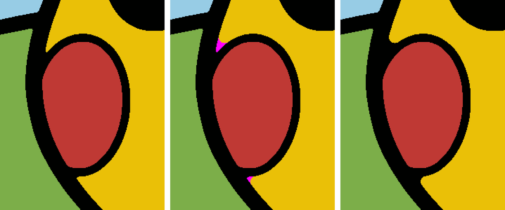
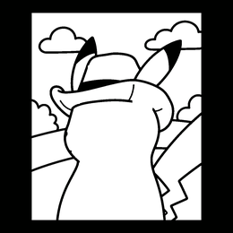
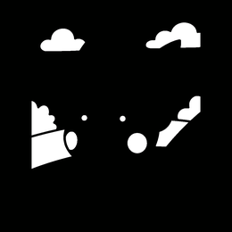

12. הרצה מלאה: Option B מהתמונה ועד STL
כל המספרים בפרק נקראו מקבצים קיימים ב־artifacts/l1_van_gogh_v1/ (OBSERVED_IN_FILE). לצורך המסמך לא הורצה שום אופטימיזציה מחדש. האיור הוא קניין רוחני של צד שלישי, ולכן אסור לפרסם את המסמך הזה ברבים.
12.1 קלט והכנה
van_gogh_p.jfif בגודל 1856 × 2268| שלב | קריאה | תוצאה |
|---|---|---|
| פלטה | extract_palette(original) | 10 צבעים: #97CCE5 #EAC007 #000100 #8AA1A2 #3D7033 #FCFEFE #7CAE49 #609337 #BF3934 #354043 |
| הקטנה ומיפוי | resize(INTER_AREA) + snap_to_palette | 1676 × 2048 (163.7 × 200 מ"מ), במרכז קנבס של 2048, עם x₀ = 186 |
| Option A | ידני (פתיחה של 17 פיקסלים בחלון הלחי) | 173 פיקסלים צהובים → שחור (1.65 מ"מ²) |
| Option B | ידני | 13,154 פיקסלים #354043 → #000100 (125.4 מ"מ²) |
| אינדוקס | exact_index | 10 תוויות, frame_label = 9 (#FF00FF), 35 אזורים |

12.2 רצף הקריאות במתכנן
main() scripts/run_turtle_reveal_planner_poc.py:158
├─ exact_index(rgb) -> labels[2048,2048], palette[10]
└─ run_variant("per_cell", labels, palette, RevealConfig(tile 2.0, beam 8, "colors", frame 9))
├─ RevealPlanner.__init__
│ physical_grid -> 2048/2304/128 @225 mm ; width_kernel -> 13x13 ellipse
│ build_cells -> 11,498 cells ; embed -> cell_map[2304,2304] ; nub_steps = 5
├─ closure() feasible=True, round-robin 12 sheets, 15.8 s
├─ beam_search() COMPLETE, 10 sheets, 553 maximal_reveal evaluations
├─ eliminate_sheets() no merge possible -> 10 sheets
├─ materialize() 10 x {physical_mask, visible_mask}
├─ audit_edge_connectivity / audit_connection_width (x4 only; x8 skipped)
├─ composite vs target -> 0 mismatched pixels
└─ seam_report() 171 px = 16.7 mm, 1 of 35 regions split total 304.3 s
12.3 הלוחות שנוצרו
| עומק (קדמי=0) | קובץ | צבע | 4-neighbor | width | חומר | פתחים <0.8 | חורים ב־CAD | קודקודים |
|---|---|---|---|---|---|---|---|---|
| 0 | layer_09_000100 | #000100 | PASS | PASS | 42.3% | 1 | 18 | 10,595 |
| 1 | layer_08_eac007 | #EAC007 | PASS | PASS | 64.5% | 1 | 24 | 9,665 |
| 2 | layer_07_97cce5 | #97CCE5 | PASS | PASS | 79.5% | 1 | 22 | 7,427 |
| 3 | layer_06_8aa1a2 | #8AA1A2 | PASS | PASS | 85.1% | 1 | 24 | 6,071 |
| 4 | layer_05_3d7033 | #3D7033 | PASS | PASS | 90.5% | 0 | 19 | 4,699 |
| 5 | layer_04_000100 | #000100 | PASS | PASS | 92.0% | 0 | 10 | 2,741 |
| 6 | layer_03_fcfefe | #FCFEFE | PASS | PASS | 94.9% | 0 | 6 | 1,735 |
| 7 | layer_02_7cae49 | #7CAE49 | PASS | PASS | 97.5% | 0 | 4 | 994 |
| 8 | layer_01_609337 | #609337 | PASS | PASS | 99.1% | 0 | 2 | 461 |
| 9 | layer_00_bf3934 | #BF3934 | PASS | PASS | 100% | 0 | 0 | 5 |


איור: physical_sheet_preview.png של כל לוח (לבן = חור). מספר = עומק מלפנים.
DERIVED קריאת הסדר: השחור הקדמי הוא המתאר הראשי. אחריו הצהוב, שבזכות המתאר שלפניו יכול להחזיק "שלד" נסתר. השחור השני (עומק 5) מכיל פרטים פנימיים: עיניים, אף, פה, קווי הלחיים, קווים בגוף ופרטי הכובע. אלה פרטים מוקפים בצבעים אחרים, שאפשר לתמוך בהם רק אחרי שהלוחות שלפניהם חשפו מספיק כדי שיהיה מאחוריהם חומר נסתר. קטע מקו המתאר השחור הראשי (אזור 0) פוצל בין שני העומקים, וזה כל התפר: 171 זוגות פיקסלים.
source_visible_region_mask.png)12.4 הרכבה, עומק והשוואה אחרי CAD

mask_derived_composite.png: הרכבה מהמסכותstack_from_cad.png: הרכבה מהגאומטריה שנכנסה ל־CADvisible_depth_map.png (כהה = קדמי)הרכבה מהמסכות לעומת היעד: 0 פיקסלים שונים. הרכבה מה־CAD לעומת הרכבה מהמסכות: 0 פיקסלים שונים. התמונה השמאלית: באזור התמונה הצבעים כמעט אחידים, כי רוב התאים של כל צבע נחשפו באותו עומק.
12.5 תוצאות ה־CAD
| שכבה | פוליגונים | חורים | STEP solids | משולשי STL | watertight | רכיבים | ΔA % | ΔV % | זמן (trace/CAD/read) |
|---|---|---|---|---|---|---|---|---|---|
| layer_00 | 1 | 0 | 1 | 12 | ✓ | 1 | 0.0 | 0.0 | 0.05/0.06/0.05 |
| layer_01 | 1 | 2 | 1 | 1,836 | ✓ | 1 | 0.0016 | 0.0 | 0.03/0.28/0.60 |
| layer_02 | 1 | 4 | 1 | 3,968 | ✓ | 1 | 0.0035 | 0.0 | 0.03/0.61/1.31 |
| layer_03 | 1 | 6 | 1 | 6,932 | ✓ | 1 | 0.0063 | 0.0 | 0.05/1.16/2.12 |
| layer_04 | 1 | 10 | 1 | 10,956 | ✓ | 1 | 0.0101 | 0.0 | 0.04/1.90/3.15 |
| layer_05 | 1 | 19 | 1 | 18,788 | ✓ | 1 | 0.0169 | 0.0 | 0.06/3.34/5.20 |
| layer_06 | 1 | 24 | 1 | 24,276 | ✓ | 1 | 0.0231 | 0.0 | 0.07/4.51/7.14 |
| layer_07 | 1 | 22 | 1 | 29,700 | ✓ | 1 | 0.0292 | 0.0 | 0.08/5.97/13.21 |
| layer_08 | 1 | 24 | 1 | 38,652 | ✓ | 1 | 0.0485 | 0.0 | 0.11/8.49/19.99 |
| layer_09 | 1 | 18 | 1 | 42,372 | ✓ | 1 | 0.085 | 0.0 | 0.12/10.70/32.52 |
כל הקבצים בגבולות [0,225]\times[0,225]\times[0,1.6] מ"מ. סך הכול 122.9 שניות. רוב הזמן הלך לקריאה החוזרת, ובעיקר ל־importStep ול־trimesh.
DERIVED מספר המשולשים: ללוח עם V קודקודים (בכל הטבעות) ו־h חורים, הפאה העליונה והתחתונה תורמות כ־2(V+2h-2) משולשים, והדפנות 2V. יחד: \approx 4V+4h-4. בדיקה: ב־layer_00 (V=5 כולל קודקוד סוגר, כלומר 4 ייחודיים, h=0): 4\cdot4-4=12 ✓. ב־layer_01 (461 כולל 3 קודקודים סוגרים, כלומר 458 ייחודיים, h=2): 4\cdot458+8-4=1836 ✓.